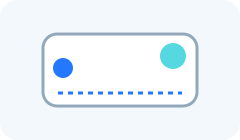
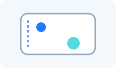
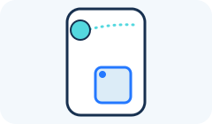

Android page: Settings > Cursor
Cursor
The cursor marks the place on the phone where Scrool performs an action.
Cursor color
Choose the cursor’s color.
Cursor speed
Control how far the cursor moves when your finger moves on the pad.
Cursor acceleration
Control how much the cursor speeds up when you move your finger farther or faster.
Cursor X
Choose the cursor’s starting position from left to right.

Cursor Y
Choose the cursor’s starting position from top to bottom.

Cursor radius
Make the cursor dot smaller or larger.
Cursor hide delay (ms)
Choose how long the cursor stays visible after it stops moving. A value of zero hides it immediately.
Cursor teleport
When you first touch the pad, move the cursor to the matching place on the phone screen.

Cursor teleport minimum distance
Choose how far the cursor must be from the matching place before the teleport indicator appears.